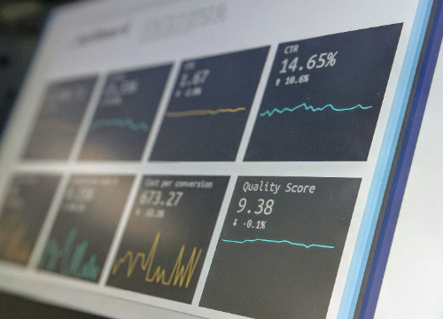

Data Bank runs just like any other digital bank - but it isn’t only for banking activities, they also have the world’s most secure distributed data storage platform.
This case study is all about calculating metrics, growth and helping the business analyse their data in a smart way to better forecast and plan for their future developments

Data Mart is Danny’s latest venture and after running international operations for his online supermarket that specialises in fresh produce - Danny is asking for your support to analyse his sales performance.
In June 2020 - large scale supply changes were made at Data Mart. All Data Mart products now use sustainable packaging methods in every single step from the farm all the way to the customer.
Danny needs your help to quantify the impact of this change on the sales performance for Data Mart and it’s separate business areas. Danny wants to know Which platform, region, segment and customer types were the most impacted by this change?
Project 3 (PowerBI Dashboard)

Work In Progress